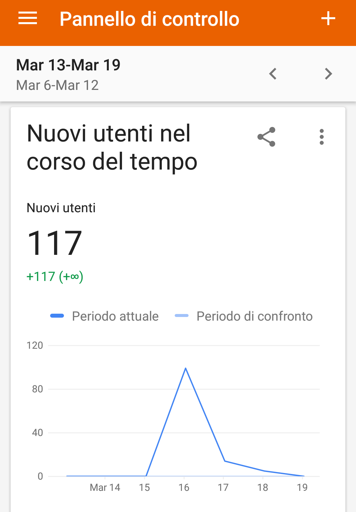

Gruppo Scout Canaro 1
Don Jerzy Popieluszko
ABSTRACT
Ho deciso di creare questo sito web per aiutare a sviluppare ulteriormente quest'attività positiva che è lo scoutismo. La mia decisione verte attorno al fatto che non esisteva nessun sito per tale gruppo. Grazie a questo sito, lineare nei contenuti, si può venir a conoscenza di questa realtà, dell'utilità che offre a coloro che vi prendono parte.
PROJECT MANAGEMENT PLAN
Benchmarking
- Obiettivi: gli obiettivi del sito web sono di aiutare il gruppo a farsi conoscere, a crearsi ulteriore pubblicità in concomitanza con la loro pagina Instagram. Coloro che venissero a conoscenza del sito possono immergersi in un mondo nuovo, capire come funziona e come lavora il gruppo, o per chi fosse già a conoscenza di tale attività può aiutare chi non conosce ciò a venirne a conoscenza.
- Target Utente: Il target utente a cui si riferisce il sito è mirato, interessa in particolare le famiglie con figli. Sia i genitori possono venire a conoscenza del sito e interessarsi per i propri figli, sia un ragazzo/a può venirne a conoscenza e voler sperimentare tale attività.
- Competitors:
| SITO CREATO DA ME | SITO 1 | |
|---|---|---|
| VANTAGGI | - Testo e contenuti essenziali per facilitare l'interazione con l'utente. - È presente la storia del gruppo |
- È presente un collegamento ad una pagina Facebook. |
| SVANTAGGI | - Non è presente un collegamento ad una pagina Facebook del gruppo. | - Troppo testo, scritto in piccolo, l'utente potrebbe sentirsi disorientato a causa delle troppe informazioni presenti. - La homepage del sito non è aggiornata. |
STRUTTURA E LAYOUT
- Architetture del sito:
- Wireframe: Il sito è composto dalla pagina HOME ed è collegato a quattro ulteriori pagine: chi siamo, organizzazione, come iscriversi, foto. Ciò che rimane uguale per ogni pagina è l'intestazione con il nome del sito, il logo, lo sfondo, il menù, il footer (ad eccezione della pagina "foto" nella quale è assente il footer).
- Look and Feel: Ho utilizzato per il mio sito vari fonts, presi da "https://fonts.google.com/". Ho scelto un font handwriting (Neucha) per il nome del sito, per il testo del body ho utilizzato un font del tipo serif (Domine), infine per il menù e il footer ho scelto un font sans-serif (Lato). I colori utilizzati sono pochi: un azzurro chiaro per il footer che richiama lo sfondo dalle tonalità grigio-bianco, colori chiari per esaltare il testo e rendere più fruibile la lettura e la visualizzazione dei contenuti. I colori che risaltano maggiormente sono il rosso e il giallo del logo. Altro colore usato è il rosso, lo si vede quando si passa con il cursore sopra ai link presenti nel footer e per indicare in quale pagina del menù ci si trova.
LINGUAGGI E STRUMENTI
I linguaggi utilizzati sono HTML e CSS.
Come strumenti ho utilizzato SublimeText2 come text editor, Googlefont per i fonts, FontAwesome per le icone, per lo sfondo ho usato Subtle Patterns (https://www.toptal.com/designers/subtlepatterns/), per i colori w3schools.com (https://www.w3schools.com/colors/colors_picker.asp). Per la pubblicazione Github.
COMMUNICATION STRATEGY
- Background: Il sito è efficace per ampliare l'esistenza del gruppo, dato che mancava una pagina apposita.
- Obiettivi comunicativi: Uno degli obiettivi del sito è dar risalto a un'attività ormai poco considerata o addirittura non conosciuta dai giovani d'oggi. Serve per dare visibilità a quest'opportunità, che accompagna l'individuo durante la crescita, migliorandolo costantemente sotto vari aspetti, si impara l'aiuto reciproco, il rispetto dell'altro, il rispetto per la natura e le autorità.
- Target audience e messaggio: Il target primario sono le famiglie con figli e i giovani, coloro che sono raggiungibili tramite i social network. Come target secondario ci sono coloro che vogliono farsi un'idea dell'attività proposta per replicarla o proporla all'interno della propria comunità, o coloro che appartengono già a un gruppo scout FSE e cercano collaborazione (ad esempio per fare uscite assieme, manifestazioni, ecc.)
- Promozione: Intendo promuovere il sito grazie all'uso dei social network, in particolar modo Facebook per raggiungere la fascia d'età dei possibili genitori/amici conoscenti e Instagram per raggiungere un pubblico più giovane.
- Valutazione dei risultati: Per valutare il successo del mio sito ho optato per il raggiungimento dei like su Facebook e le visualizzazioni tramite Google Analytics.
